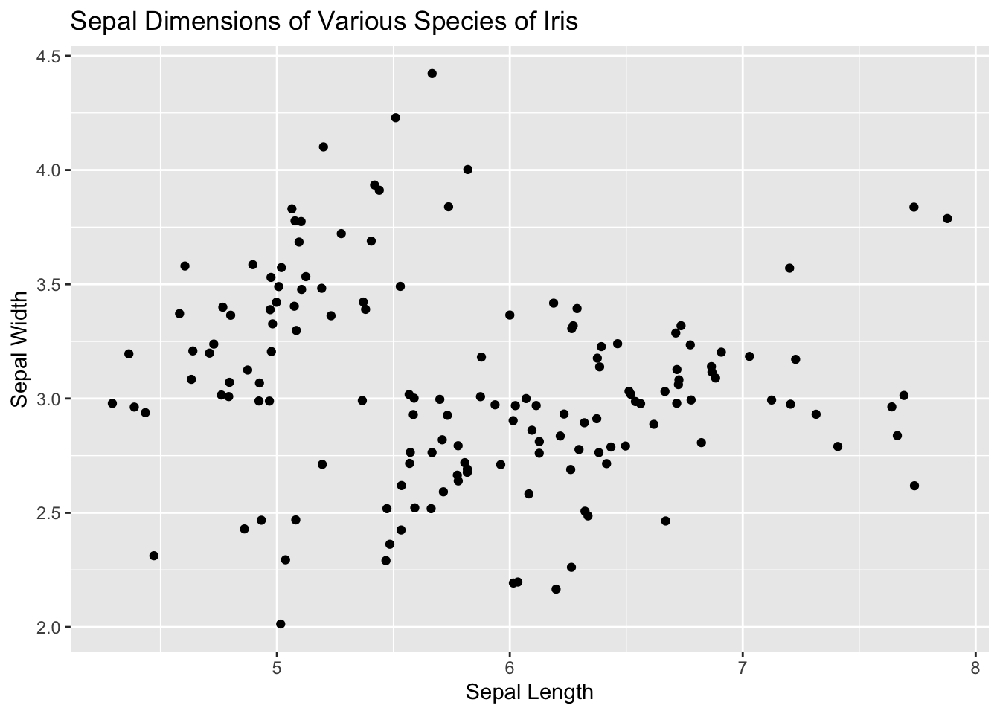
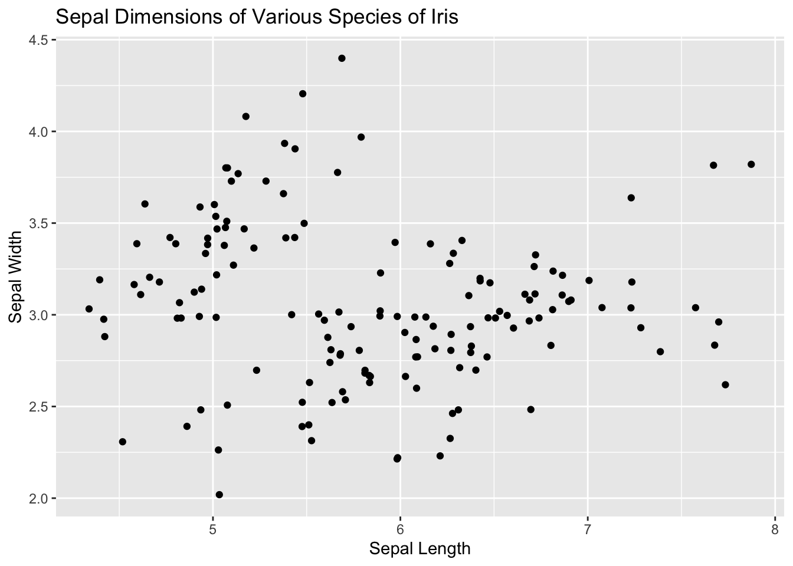
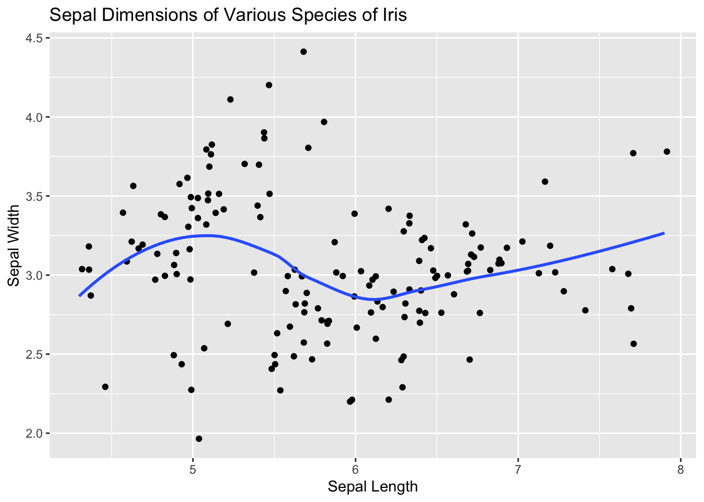

3 Data
You can never look at the data too much. – Mark Engerman
3.1 Introduction
Getting data into and out of R is a major part of any real world data science project. There are multiple data formats that you use to transport this data, each with their own positives and negatives.
Start by loading the packages which we will need in this chapter.
You can find most of the files that we use for this chapter here. We can also access these files by saving the URL to R and then using it so that we can download and access the files located on the internet.
github_url <- "https://raw.githubusercontent.com/PPBDS/primer.tutorials/master/inst/tutorials/033-data-files/data/"3.2 Reading and writing files

The first method that we can use to import data is by using a file. You’ve likely downloaded files before, whether it’s a game’s EXE file, an image’s JPG file, or an essay’s PDF file. At their core, those files are just data. The JPG file has a bunch of data about the colors in the image and the PDF file has a bunch of data about the text. So we can use these files to store data from experiments or surveys so that we can then analyze that data later or share that data with other people.
In this section, we’ll be going over the common file formats and how we can pull data from these files into R or create new files so that we can share them with other people.
3.2.1 Text files
The most common type of data text file is “CSV,” which stands for comma separated value. In other words, CSV files are files whose values are separated by commas. Each comma from the csv file corresponds to a column, and the column names are, by default, taken from the first line of the file.
CSV files (and their counterparts) are easily transferable between computers and programming languages and are extremely simple because they’re effectively just text files that have a special format. Additionally, they’re very easy to parse through small amounts of data because they’re easily readable by humans and computers. However, due to their simple nature, CSV files are only able to move basic data and only as text values. They also have poor support for special characters like commas, which can make the dataset harder to organize and understand by adding a new column for a few specific entries. This make CSV files good for sharing data between computers and languages, but not efficient for transporting or saving large amounts of data.
3.2.1.1 Reading and writing from a CSV file
Here’s an example of a CSV file and what it looks like. Use read_csv() from the readr package — which is one of the main packages within the tidyverse collection of packages — to load the data into R. The file argument is the file path for the CSV file.
# We can access files either by using their URL or their file path. In this
# case, we're using the GitHub URL to access the database. This is done by
# pasting the file name into our URL using the paste0() command.
file_1 <- paste0(github_url, "test_1.csv")
read_csv(file = file_1)Rows: 2 Columns: 3
── Column specification ────────────────────────────────────────────────────────
Delimiter: ","
dbl (3): a, b, c
ℹ Use `spec()` to retrieve the full column specification for this data.
ℹ Specify the column types or set `show_col_types = FALSE` to quiet this message.# A tibble: 2 × 3
a b c
<dbl> <dbl> <dbl>
1 1 2 3
2 4 5 6Use write_csv() to save a tibble to a csv file. write_csv() has two main arguments: x and file. The x argument is the data set that you want to save. The file argument is the file path to which you want to save the file. The end of the file argument is the name that you want to use for the file.
When we read the csv file again, the data shows up. This is useful for saving information both to share and for your own projects.
read_csv("my_csv.csv")Rows: 2 Columns: 3
── Column specification ────────────────────────────────────────────────────────
Delimiter: ","
dbl (3): a, b, c
ℹ Use `spec()` to retrieve the full column specification for this data.
ℹ Specify the column types or set `show_col_types = FALSE` to quiet this message.# A tibble: 2 × 3
a b c
<dbl> <dbl> <dbl>
1 1 2 3
2 4 5 6When you want to remove a file from your system, use file.remove().
file.remove("my_csv.csv")[1] TRUESometimes, CSV files will not be what you want. Maybe they have the wrong column names, have information at the top of the file, or have comments interspersed within the file.
3.2.1.2 skip
Consider the following csv file: test_2.csv. Here’s what it looks like as a text file:
[1] "Top two rows consist of junk which"
[2] "we don't care about. Data starts on row 3."
[3] "a,b,c"
[4] "9,8,7"
[5] "4,5,6" As you can see, there is text at the top of this file. Often times information about how data was collected, or other relevant information, is included at the top of the data file. However, read_csv() can’t differentiate between this text and the data that we want to read, causing it to fail and output gibberish.
# You can also get a csv file by using the URL of the file. This won't work for
# all file types though.
file_2 <- paste0(github_url, "test_2.csv")
read_csv(file_2)Warning: One or more parsing issues, see `problems()` for detailsRows: 4 Columns: 1
── Column specification ────────────────────────────────────────────────────────
Delimiter: ","
chr (1): Top two rows consist of junk which
ℹ Use `spec()` to retrieve the full column specification for this data.
ℹ Specify the column types or set `show_col_types = FALSE` to quiet this message.# A tibble: 4 × 1
`Top two rows consist of junk which`
<chr>
1 we don't care about. Data starts on row 3.
2 a,b,c
3 9,8,7
4 4,5,6 We can use the skip argument to skip the first 2 text lines and allow read_csv() to work.
read_csv(file = file_2,
skip = 2)Rows: 2 Columns: 3
── Column specification ────────────────────────────────────────────────────────
Delimiter: ","
dbl (3): a, b, c
ℹ Use `spec()` to retrieve the full column specification for this data.
ℹ Specify the column types or set `show_col_types = FALSE` to quiet this message.# A tibble: 2 × 3
a b c
<dbl> <dbl> <dbl>
1 9 8 7
2 4 5 6Now that we’ve gotten rid of the warnings, let’s look at the other message R sends: the column specification message.
3.2.1.3 col_types
The column specification message is a message that R sends to tell you what data types it is using for the column.
Data types are the types discussed in Chapter 2 Wrangling, such as characters, factors, integers, and dates. When we use a tibble, each column has to have a specific type of data. In this example, all of the columns have numbers in them. If there are characters in the column, the columns are going to have a character data type.
To get rid of the column specification message, use the col_types() argument and specify the data types. You can do this by just copying the column specification message and putting it as the col_types() argument.
read_csv(file = file_2,
skip = 2,
col_types = cols(a = col_double(),
b = col_double(),
c = col_double()))# A tibble: 2 × 3
a b c
<dbl> <dbl> <dbl>
1 9 8 7
2 4 5 6You can also change the column arguments so that you get the data type that you want. Take test_7.csv.
Rows: 2 Columns: 2
── Column specification ────────────────────────────────────────────────────────
Delimiter: ","
chr (1): student
dbl (1): grade
ℹ Use `spec()` to retrieve the full column specification for this data.
ℹ Specify the column types or set `show_col_types = FALSE` to quiet this message.# A tibble: 2 × 2
grade student
<dbl> <chr>
1 1 Sam
2 5 Becca Let’s try parsing this so that the student column is a factor and the grade column is an integer.
read_csv(test_7,
col_types = cols(grade = col_integer(),
student = col_factor()))# A tibble: 2 × 2
grade student
<int> <fct>
1 1 Sam
2 5 Becca By being clever with the columns, we can make our lives easier down the line when we graph the data.
We can also manipulate other arguments for CSV files.
3.2.1.4 col_names and clean_names()
Let’s try changing the column names in the test_3.csv file.
As you can see below, the file doesn’t have any column names, resulting in the first row being considered as the names for the rest of the file.
Rows: 1 Columns: 3
── Column specification ────────────────────────────────────────────────────────
Delimiter: ","
dbl (3): 11, 21, 33
ℹ Use `spec()` to retrieve the full column specification for this data.
ℹ Specify the column types or set `show_col_types = FALSE` to quiet this message.# A tibble: 1 × 3
`11` `21` `33`
<dbl> <dbl> <dbl>
1 4 5 6We can fix this by changing the col_names argument.
Rows: 2 Columns: 3
── Column specification ────────────────────────────────────────────────────────
Delimiter: ","
dbl (3): a, b, c
ℹ Use `spec()` to retrieve the full column specification for this data.
ℹ Specify the column types or set `show_col_types = FALSE` to quiet this message.# A tibble: 2 × 3
a b c
<dbl> <dbl> <dbl>
1 11 21 33
2 4 5 6You can also create names automatically by setting col_names to FALSE
read_csv(file_3, col_names = FALSE)Rows: 2 Columns: 3
── Column specification ────────────────────────────────────────────────────────
Delimiter: ","
dbl (3): X1, X2, X3
ℹ Use `spec()` to retrieve the full column specification for this data.
ℹ Specify the column types or set `show_col_types = FALSE` to quiet this message.# A tibble: 2 × 3
X1 X2 X3
<dbl> <dbl> <dbl>
1 11 21 33
2 4 5 6Changing the names of the columns allows for you to call on the columns later when the data is actually a tibble. Setting the column names to something that you can understand makes it much easier to understand your code later on.
But what if we have good column names, they just aren’t formatted correctly? Let’s look at test_4.csv for an example.
New names:
Rows: 3 Columns: 4
── Column specification
──────────────────────────────────────────────────────── Delimiter: "," dbl
(4): one powers, Two_Powers...2, 3_Powers, Two_Powers...4
ℹ Use `spec()` to retrieve the full column specification for this data. ℹ
Specify the column types or set `show_col_types = FALSE` to quiet this message.
• `Two_Powers` -> `Two_Powers...2`
• `Two_Powers` -> `Two_Powers...4`file_4_tibble# A tibble: 3 × 4
`one powers` Two_Powers...2 `3_Powers` Two_Powers...4
<dbl> <dbl> <dbl> <dbl>
1 1 2 3 2
2 1 4 81 5
3 1 8 27 8As you can see, while the function does compile the names aren’t easy to access. It’s possible to access the column by using the ` tickmark like below:
file_4_tibble$`one powers`[1] 1 1 1But that can still cause problems down the line and it’s just annoying to use the backticks every time you want a column name. This is when we can use the clean_names() function from the janitor package. It essentially formats the column names so that they follow the underscore separated naming convention and are all unique.
file_4_tibble |>
clean_names()# A tibble: 3 × 4
one_powers two_powers_2 x3_powers two_powers_4
<dbl> <dbl> <dbl> <dbl>
1 1 2 3 2
2 1 4 81 5
3 1 8 27 8This cleans the column names, saving you time when your file has a large amount of columns or you need to type a lot of column names. These issues are more common when you’re pulling data off of the internet as that’s normally dirty data and can have a lot of columns formatted in weird ways.
3.2.1.5 na
Another feature of read_csv() is the na argument.
Rows: 2 Columns: 3
── Column specification ────────────────────────────────────────────────────────
Delimiter: ","
chr (1): b
dbl (2): a, c
ℹ Use `spec()` to retrieve the full column specification for this data.
ℹ Specify the column types or set `show_col_types = FALSE` to quiet this message.# A tibble: 2 × 3
a b c
<dbl> <chr> <dbl>
1 1 . 3
2 4 5 6test_5.csv is missing a value, and it uses a . as a substitute. This makes the computer think that the period is the actual value of the data point, which is obviously not true (we want numbers instead). By default, read_csv() treats white space like spaces or tabs as a missing value, but you can set this argument directly as well.
read_csv(file_5,
na = ".")Rows: 2 Columns: 3
── Column specification ────────────────────────────────────────────────────────
Delimiter: ","
dbl (3): a, b, c
ℹ Use `spec()` to retrieve the full column specification for this data.
ℹ Specify the column types or set `show_col_types = FALSE` to quiet this message.# A tibble: 2 × 3
a b c
<dbl> <dbl> <dbl>
1 1 NA 3
2 4 5 6
3.2.1.6 comment
You can also tell the code to ignore comment lines, which may be common in a csv file that was written by a human and as such has comments in it. test_6.csv is a perfect example of this. Here’s what it looks like:
[1] "a,b,c" "# This is a comment line"
[3] "98,99,100" "# Here is another comment line"
[5] "4,5,6" By setting the comment argument, we’re able to skip lines that have a certain starting point. In this case, the comment is the # sign, so we just need to include that in.
read_csv(file_6, comment = "#")Rows: 2 Columns: 3
── Column specification ────────────────────────────────────────────────────────
Delimiter: ","
dbl (3): a, b, c
ℹ Use `spec()` to retrieve the full column specification for this data.
ℹ Specify the column types or set `show_col_types = FALSE` to quiet this message.# A tibble: 2 × 3
a b c
<dbl> <dbl> <dbl>
1 98 99 100
2 4 5 6If you ever want to skip certain lines, just use the comment argument in order to designate it as something to be skipped. This is best used with cases where the read_csv() command will not compile without it.
3.2.1.7 read_delim()
So far, we’ve covered how we can organize CSV data, but at it’s core we’re working with comma separated values. But what happens when we want to read data from something that doesn’t use commas to separate the values?
When our tabular data comes in a different format, we can use the read_delim() function instead. For example, a different version of test_6.csv could exist that has no column names and uses pipes (|) as the delimiter instead of commas.
Here’s another file named delim_1, which uses the | to separate the lines instead of a comma like a normal CSV file.
[1] "population|town" "150|Cambridge, MA" "92|Newton, MA" With read_delim(), we specify the first argument as the path to the file, as done with read_csv(). Then we provide values to the delim argument to have the code use | as the separator instead of the comma.
# Because delim_1 uses pipes to separate values, we can just use that as our
# delim value. However, for more complex symbols like tab, we use something
# different like "\\t". This varies for every symbol, but you can find most
# delim values on the internet.
delim_1 <- paste0(github_url, "delim_1.txt")
read_delim(delim_1, delim = "|")Rows: 2 Columns: 2
── Column specification ────────────────────────────────────────────────────────
Delimiter: "|"
chr (1): town
dbl (1): population
ℹ Use `spec()` to retrieve the full column specification for this data.
ℹ Specify the column types or set `show_col_types = FALSE` to quiet this message.# A tibble: 2 × 2
population town
<dbl> <chr>
1 150 Cambridge, MA
2 92 Newton, MA You can often find CSV files on websites like kaggle as well as by exporting from an Excel spreadsheet. Keep in mind that data imported off of the internet is often very messy, so try to use some of the functions listed here to clean it up. For a full list of arguments and in-depth documentation about the read_csv() function, please visit this website.
3.2.2 Excel files
Excel is a spreadsheet program that use tables to analyze, store, or manipulate data. The tables are composed of cells which include text, numbers, or formulas. Excel files have the filename extensions .xls or .xlsx, and they’re capable of storing additional things that you cannot store in a .csv file such as fonts, text formatting, graphics, etc.
In order to write excel files you have to install complex packages, and they are hard to create. Writing excel files is beyond the scope of this Primer.
This makes Excel files valuable because they’re commonly accepted and usable (Microsoft Excel is a very common program), but they’re also hard to use because you can’t write new data into them. As such, Excel files are common for data that was originally in Excel, like accounting data or other spreadsheet applications.
Reading Excel files is easy. To do so, we use the read_excel() function from the readxl package.
library(readxl)
# Unfortunately, it is not possible to read Excel files directly from the web.
# So we download the file by hand and then read it in from the current working
# directory. Note that the "proper" way of handling this would be to create a
# temp directory with tempdir(), download the file into that directory, read it,
# and then delete the temp directory. That way, you would not have random
# downloaded files hanging around.
# The mode = "wb" is a necessary addition for Windows users because Windows is
# weird. It's not necessary on MacOS and may cause an error as well.
download.file(url = paste0(github_url, "excel_1.xlsx"),
destfile = "example_excel.xlsx", mode = "wb")
read_excel(path = "example_excel.xlsx")# A tibble: 2 × 3
a b c
<dbl> <dbl> <dbl>
1 1 2 3
2 4 5 6If the .xlsx file has multiple sheets, you have to use the sheet argument to specify the sheet number or name. The read_excel() function also has arguments similar to the read_csv() function such as col_names, col_types, and na.
3.2.3 RDS files
One very important aspect of R is saving objects into RDS files, which store a single R object into a file. These files allow us to save R objects such as plots and tibbles into R and then reload the object that it contains later without re-running the code that made it. This is especially useful for when you’re dealing with bulk data and want to save the plot that comes with it for later so that you don’t have to do all of the data wrangling and plotting again. With a RDS file, you save the entire object, allowing you to do more things with it later without having to go through all of the code. However, RDS files are limited to R projects only, and they’re incomprehensible both to human eyes and to other programming languages. This makes RDS files ideal for saving objects temporarily in your own project or for sharing objects to other R users.
Take the following R object, a graph of the iris data set.
iris_p <- iris |>
ggplot(aes(x = Sepal.Length, y = Sepal.Width)) +
geom_jitter() +
labs(title = "Sepal Dimensions of Various Species of Iris",
x = "Sepal Length",
y = "Sepal Width")
iris_p
When we save to a RDS file, we use the function write_rds(). Just like write_csv(), this function has two main arguments: x and file. The x argument is the object that you want to save. The file argument is the file path where you want to save the file. This determines the name that you use for the file.
write_rds(x = iris_p, file = "iris_p.rds")read_rds() reads the file back into R. Just like read_csv() read_rds() has one main argument, which is the path to the file that you are wanting to read into R.
read_rds(file = "iris_p.rds")
We can then use that R object in more operations, such as adding a trend line.
rds_p <- read_rds(file = "iris_p.rds")
rds_p +
geom_smooth(method = "loess",
formula = y ~ x,
se = FALSE)
By saving the iris_p plot in a RDS file, we eliminate the time needed to calculate and generate that plot again because we can use the saved information. We can then use the object by reading the file back into r and using it like any normal plot, adding new layers and doing new operations.
There are also .Rdata files which can store multiple objects, but RDS files can accomplish a similar task. This makes it much easier to use RDS files for anything that you want to keep in R.
3.2.4 JSON
An increasingly common format for sharing data is JavaScript Object Notation or JSON. Because this format is very general, it is nothing like a spreadsheet. Note that JSON files are often made available via the internet. Several organizations provide a JSON API or a web service that you can connect directly to and from which you can obtain data.
JSON files are a minimal readable format that structures data, and they’re commonly used to transmit data between a server and a web application like a website. For people familiar with the Javascript coding language, you’ll likely see the similarities between the JSON file format and the Javascript syntax. This makes JSON files ideal for internet transport, but they don’t see much use within a project like RDS files do.
The functions fromJSON() and toJSON() allow you to convert between R objects and JSON. Both functions come from the jsonlite package.
The function toJSON() converts a tibble to JSON format. Consider the example_1 tibble:
example_1 <- tibble(name= c("Miguel", "Sofia", "Aya", "Cheng"),
student_id = 1:4, exam_1 = c(85, 94, 87, 90),
exam_2 = c(86, 93, 88, 91))
example_1# A tibble: 4 × 4
name student_id exam_1 exam_2
<chr> <int> <dbl> <dbl>
1 Miguel 1 85 86
2 Sofia 2 94 93
3 Aya 3 87 88
4 Cheng 4 90 91# The pretty argument adds indentation and whitespace when TRUE.
toJSON(example_1, pretty = TRUE) [
{
"name": "Miguel",
"student_id": 1,
"exam_1": 85,
"exam_2": 86
},
{
"name": "Sofia",
"student_id": 2,
"exam_1": 94,
"exam_2": 93
},
{
"name": "Aya",
"student_id": 3,
"exam_1": 87,
"exam_2": 88
},
{
"name": "Cheng",
"student_id": 4,
"exam_1": 90,
"exam_2": 91
}
] The function fromJSON() converts JSON format to a tibble.
json_format_ex <-
'[
{"Name" : "Mario", "Age" : 32, "Occupation" : "Plumber"},
{"Name" : "Peach", "Age" : 21, "Occupation" : "Princess"},
{},
{"Name" : "Bowser", "Occupation" : "Koopa"}
]'
fromJSON(json_format_ex) Name Age Occupation
1 Mario 32 Plumber
2 Peach 21 Princess
3 <NA> NA <NA>
4 Bowser NA KoopaMake sure to follow the JSON format exactly when you’re writing JSON files, as the format is what makes them special and what allows them to work.
3.3 Databases

Databases are one of the most common methods of storing data, as they are capable of storing large amounts of data while also allowing for multiple people to access and change them at the same time. Think of these like a giant book with a bunch of tables that hold data. These are useful by themselves, but with the advent of computers we are now able to use relational databases.
A relational database is a database that has the tables interact with one another based on common data, allowing you to create custom tables from an existing set of records. For example, a relational database may hold multiple tables that use the same ID to keep track of different information, like one table having an ID and a movie name while another has the ID and the rating. You can then combine those two in your code, creating a table with the ID, name, and rating. This allows the person who made the database to easily put in new data as well as allow you to pull out some data at a time without loading the entire database.
It’s common to use and interact with these databases in the real world due to most businesses using relational databases to keep track of their data and to update it at their leisure. It’s not uncommon for databases to hold thousands or even millions of rows due to the need to keep track of data.
In this section, we’ll be going over how to pull data from these databases and how to interact with the data without using the entire database.
3.3.1 Reading data from a SQLite database
SQLite is probably the simplest relational database that one can use in combination with R. SQLite databases are self-contained and usually stored and accessed locally on one computer, instead of on the internet or through the cloud. Data is usually stored in a file with a .db extension. Similar to Excel files, these are not plain text files and cannot be read in a plain text editor.
The first thing you need to do to read data into R from a database is to connect to the database. We do that using dbConnect() function from the DBI (database interface) package. This does not read in the data, but simply tells R where the database is and opens up a communication channel.
library(DBI)
library(RSQLite)
# This example uses a different github URL, so you can't use the paste0() trick
download.file(url = "https://github.com/PPBDS/primer/blob/master/03-data/data/can_lang.db?raw=true",
destfile = "example_db.db", mode = "wb")
con_lang_data <- dbConnect(RSQLite::SQLite(), "example_db.db")Often relational databases have many tables, and their power comes from the useful ways they can be joined. Thus anytime you want to access data from a relational database, you need to know the table names. You can get the names of all the tables in the database using dbListTables().
tables <- dbListTables(con_lang_data)
tables[1] "lang"We only get one table name returned, which tells us that there is only one table in this database. To reference a table in the database to do things like select columns and filter rows, we use the tbl() function from the dbplyr package. The package dbplyr allows us to work with data stored in databases as if they were local data frames, which is useful because we can do a lot with big datasets without actually having to bring these vast amounts of data into your computer!
lang_db <- tbl(con_lang_data, "lang")
lang_db# Source: table<lang> [?? x 6]
# Database: sqlite 3.38.5 [/Users/dkane/Desktop/projects/primer/example_db.db]
category langu…¹ mothe…² most_…³ most_…⁴ lang_…⁵
<chr> <chr> <dbl> <dbl> <dbl> <dbl>
1 Aboriginal languages Aborig… 590 235 30 665
2 Non-Official & Non-Aboriginal langua… Afrika… 10260 4785 85 23415
3 Non-Official & Non-Aboriginal langua… Afro-A… 1150 445 10 2775
4 Non-Official & Non-Aboriginal langua… Akan (… 13460 5985 25 22150
5 Non-Official & Non-Aboriginal langua… Albani… 26895 13135 345 31930
6 Aboriginal languages Algonq… 45 10 0 120
7 Aboriginal languages Algonq… 1260 370 40 2480
8 Non-Official & Non-Aboriginal langua… Americ… 2685 3020 1145 21930
9 Non-Official & Non-Aboriginal langua… Amharic 22465 12785 200 33670
10 Non-Official & Non-Aboriginal langua… Arabic 419890 223535 5585 629055
# … with more rows, and abbreviated variable names ¹language, ²mother_tongue,
# ³most_at_home, ⁴most_at_work, ⁵lang_known
# ℹ Use `print(n = ...)` to see more rowsAlthough it looks like we just got a data frame from the database, we didn’t! It’s a reference, showing us data that is still in the SQLite database (note the first two lines of the output). It does this because databases are often more efficient at selecting, filtering and joining large data sets than R. And typically, the database will not even be stored on your computer, but rather a more powerful machine somewhere on the web. So R is lazy and waits to bring this data into memory until you explicitly tell it. To do so, we use the collect() function.
Here we will filter for only rows in the Aboriginal languages category according to the 2016 Canada Census, and then use collect() to finally bring this data into R as a data frame.
aboriginal_lang_db <- filter(lang_db, category == "Aboriginal languages")
aboriginal_lang_db# Source: SQL [?? x 6]
# Database: sqlite 3.38.5 [/Users/dkane/Desktop/projects/primer/example_db.db]
category language mothe…¹ most_…² most_…³ lang_…⁴
<chr> <chr> <dbl> <dbl> <dbl> <dbl>
1 Aboriginal languages Aboriginal languages, n… 590 235 30 665
2 Aboriginal languages Algonquian languages, n… 45 10 0 120
3 Aboriginal languages Algonquin 1260 370 40 2480
4 Aboriginal languages Athabaskan languages, n… 50 10 0 85
5 Aboriginal languages Atikamekw 6150 5465 1100 6645
6 Aboriginal languages Babine (Wetsuwet'en) 110 20 10 210
7 Aboriginal languages Beaver 190 50 0 340
8 Aboriginal languages Blackfoot 2815 1110 85 5645
9 Aboriginal languages Carrier 1025 250 15 2100
10 Aboriginal languages Cayuga 45 10 10 125
# … with more rows, and abbreviated variable names ¹mother_tongue,
# ²most_at_home, ³most_at_work, ⁴lang_known
# ℹ Use `print(n = ...)` to see more rowsaboriginal_lang_data <- collect(aboriginal_lang_db)
aboriginal_lang_data# A tibble: 67 × 6
category language mothe…¹ most_…² most_…³ lang_…⁴
<chr> <chr> <dbl> <dbl> <dbl> <dbl>
1 Aboriginal languages Aboriginal languages, n… 590 235 30 665
2 Aboriginal languages Algonquian languages, n… 45 10 0 120
3 Aboriginal languages Algonquin 1260 370 40 2480
4 Aboriginal languages Athabaskan languages, n… 50 10 0 85
5 Aboriginal languages Atikamekw 6150 5465 1100 6645
6 Aboriginal languages Babine (Wetsuwet'en) 110 20 10 210
7 Aboriginal languages Beaver 190 50 0 340
8 Aboriginal languages Blackfoot 2815 1110 85 5645
9 Aboriginal languages Carrier 1025 250 15 2100
10 Aboriginal languages Cayuga 45 10 10 125
# … with 57 more rows, and abbreviated variable names ¹mother_tongue,
# ²most_at_home, ³most_at_work, ⁴lang_known
# ℹ Use `print(n = ...)` to see more rowsWhy bother to use the collect() function? The data looks pretty similar in both outputs shown above. And dbplyr provides lots of functions similar to filter() that you can use to directly feed the database reference (i.e. what tbl() gives you) into downstream analysis functions (e.g., ggplot2 for data visualization and lm for linear regression modeling). However, this does not work in every case; look what happens when we try to use nrow to count rows in a data frame:
nrow(aboriginal_lang_db)[1] NAor tail to preview the last 6 rows of a data frame:
tail(aboriginal_lang_db)## Error: tail() is not supported by sql sourcesThese functions only work when we use the version that we used collect() on:
nrow(aboriginal_lang_data)[1] 67tail(aboriginal_lang_data)# A tibble: 6 × 6
category language mothe…¹ most_…² most_…³ lang_…⁴
<chr> <chr> <dbl> <dbl> <dbl> <dbl>
1 Aboriginal languages Tahltan 95 5 0 265
2 Aboriginal languages Thompson (Ntlakapamux) 335 20 0 450
3 Aboriginal languages Tlingit 95 0 10 260
4 Aboriginal languages Tsimshian 200 30 10 410
5 Aboriginal languages Wakashan languages, n.i.… 10 0 0 25
6 Aboriginal languages Woods Cree 1840 800 75 2665
# … with abbreviated variable names ¹mother_tongue, ²most_at_home,
# ³most_at_work, ⁴lang_knownIn order to delete and stop using an SQLite server, you need to first disconnect the file from the connection be using dbDisconnect() and passing in the connection object as an argument. You can then safely delete the database file from your computer by using file.remove().
dbDisconnect(con_lang_data)
file.remove("example_db.db")Additionally, some operations will not work to extract columns or single values from the reference given by the tbl function. Thus, once you have finished your data wrangling of the tbl() database reference object, it is advisable to bring it into your local machine’s memory using collect() as a data frame.
Warning: Usually, databases are very big! Reading the object into your local machine may give an error or take a lot of time to run so be careful if you plan to do this!
3.3.2 Interacting with SQLite databases
Now that we’ve figured out how to get data from a database, let’s look at how to wrangle data within that database.
Because databases normally contain large amounts of data, it’s advisable to do your wrangling before you use collect() to transform the database table into a tibble. This stops you from pulling large amounts of data onto your computer and just ignoring it.
So let’s try pulling in a database and see how we can manipulate it.
First off, look at what data this database holds.
dbListTables(con) [1] "albums" "artists" "customers" "employees"
[5] "genres" "invoice_items" "invoices" "media_types"
[9] "playlist_track" "playlists" "sqlite_sequence" "sqlite_stat1"
[13] "tracks" There are 13 tables in this database. Let’s access the first couple of tables, just so that we can get a good look at them and see how they’re structured.
albums <- tbl(con, "albums")
albums# Source: table<albums> [?? x 3]
# Database: sqlite 3.38.5 [/Users/dkane/Desktop/projects/primer/chinook.db]
AlbumId Title ArtistId
<int> <chr> <int>
1 1 For Those About To Rock We Salute You 1
2 2 Balls to the Wall 2
3 3 Restless and Wild 2
4 4 Let There Be Rock 1
5 5 Big Ones 3
6 6 Jagged Little Pill 4
7 7 Facelift 5
8 8 Warner 25 Anos 6
9 9 Plays Metallica By Four Cellos 7
10 10 Audioslave 8
# … with more rows
# ℹ Use `print(n = ...)` to see more rowsartists <- tbl(con, "artists")
artists# Source: table<artists> [?? x 2]
# Database: sqlite 3.38.5 [/Users/dkane/Desktop/projects/primer/chinook.db]
ArtistId Name
<int> <chr>
1 1 AC/DC
2 2 Accept
3 3 Aerosmith
4 4 Alanis Morissette
5 5 Alice In Chains
6 6 Antônio Carlos Jobim
7 7 Apocalyptica
8 8 Audioslave
9 9 BackBeat
10 10 Billy Cobham
# … with more rows
# ℹ Use `print(n = ...)` to see more rowsAs you can see, these tables both have a common column: the ArtistId column. However, they all have different information linked to that ID, such as “albums” having the albums that artist produced and “artists” having the name of that artist.
Here is the full relationship diagram of the database that we’re using.
{kind=link}
Let’s go over some of the operations that you can do on a SQLite database.
3.3.2.1 Using dbplyr
We’ve already seen how you can use the dbpylr package to get a table from a database, but let’s look at how you can also use it to do operations on databases as well.
The dbpylr package allows you to use many of the same functions from the tidyverse like select(), filter(), mutate() without any issues, making it the easiest to do operations with.
Here’s an example of using the dbpylr package to get the number of albums each artist has created.
# You can keep a column during the summarize() if you just put the name equal to
# itself. This code is deliberately long in order to show the common functions
# that we use.
band_albums <- tbl(con, "albums") |>
inner_join(tbl(con, "artists"), by = "ArtistId") |>
select("AlbumId", "ArtistId", "Title", "Name") |>
group_by(ArtistId) |>
summarize(Name = Name, num_albums = n()) |>
mutate(artist_name = Name) |>
mutate(artist_id = ArtistId) |>
filter(num_albums > 3) |>
arrange(desc(num_albums)) |>
select(artist_id, artist_name, num_albums)
band_albums# Source: SQL [?? x 3]
# Database: sqlite 3.38.5 [/Users/dkane/Desktop/projects/primer/chinook.db]
# Ordered by: desc(num_albums)
artist_id artist_name num_albums
<int> <chr> <int>
1 90 Iron Maiden 21
2 22 Led Zeppelin 14
3 58 Deep Purple 11
4 50 Metallica 10
5 150 U2 10
6 114 Ozzy Osbourne 6
7 118 Pearl Jam 5
8 21 Various Artists 4
9 82 Faith No More 4
10 84 Foo Fighters 4
# … with more rows
# ℹ Use `print(n = ...)` to see more rowsThese are the functions that we’re already familiar with using, and they work just as well on database tables as well.
However, there are cases where you will have to use SQL code to accomplish certain tasks.
3.4 Webscraping

In the first part of this chapter, we learned how to read in data from plain text files that are usually “rectangular” in shape using the tidyverse read_* functions. Sadly, not all data comes in this simple format, but we can happily use many other tools to read in more messy/wild data formats. The formal name for gathering non-rectangular data from the web and transforming it into a more useful format for data analysis is web scraping.
We can do web scraping through r by using the rvest library, which is a library that allows us to look at HTML and CSS selectors, then pick them apart to get the data we want. Let’s look at what this means.
3.4.1 HTML and CSS selectors
Before we jump into scraping, let’s learn a little bit about what the “source code” of a website looks like.
3.4.1.1 Website structure

Websites are coded in a language called HTML, or HyperText Markup Language. This is the code that puts all of the information on the website, such as the numbers and text. These are the files created when we “knit” our .Rmd files and it’s what makes them put information on the screen. When we’re webscraping, we can look at the information on the website by looking at the HTML code. You can try this out by yourself! Just go to any website and right-click, then press “Inspect”. You’ll be able to see the HTML code behind the website and even edit it to your liking!
knitr::include_graphics("03-data/images/html_inspect.gif")
HTML uses many nested “tags” to organize the structure. For example, an HTML file like this:
<!-- This is using the HTML language. You don't actually put this in a chunk if
you want to put this in an Rmarkdown file, you can just type it straight in.-->
<html>
<p>
Hello World
</p>
</html>looks like this in the result:
Hello World
Each tag defines an element, or a part of a website. For example, we used the <p> tag to define a paragraph element in HTML. We then close the paragraph by using the </p> tag, ending the paragraph. You can find a full list of HTML tags and elements here.
Now, we’re doing data science. And let’s say you find some really cool website off of the internet that has a lot of really useful data, but there’s no download file (and it’s legal to scrape from that website). That means that you have to pull the information from the HTML code.
We can do this by using the rvest package like I talked about earlier. This is essentially a package that allows you to scrape information from HTML code, allowing you to scrape the information off of the complete website.
Let’s try scraping the Hello World from the earlier HTML code.
First off, we need to use the minimal_html() function so that we can get an R object that we can then work on. This is a temporary use because we’re trying to Think about it like changing the information from HTML code into something that R can understand.
raw_html_1 <- "<html>
<p>
Hello World
</p>
</html>"
raw_html_1 |>
minimal_html(){html_document}
<html>
[1] <head>\n<meta http-equiv="Content-Type" content="text/html; charset=UTF-8 ...
[2] <body>\n<p>\n Hello World\n </p>\n ...Then we need to filter by the elements that the HTML file contains. In this case, we’re looking for the paragraph tag, or <p>. That means that we can just use html_element() to get the first paragraph element.
# Only use the letter part of the tag, not the <, >, or /
raw_html_1 |>
minimal_html() |>
html_element("p"){html_node}
<p>This returns an HTML node, or the specific element that we chose. If we had more paragraphs in our HTML code, this would return more HTML nodes. Now, the interesting thing about these nodes is that they contain information that we can access using html_text2(). This lets us parse through the code without any problems.
# html_text2() is different from the normal html_text() because it returns an
# actual string. This is normally what we want.
raw_html_1 |>
minimal_html() |>
html_element("p") |>
html_text2()[1] "Hello World"But websites, especially ones with useful data, don’t just exist to state “Hello World”. They’re much more complex than that. By layering different elements, you can create a website that contains a lot more information.
For example, doing this in HTML:
<html>
<table>
<tr>
<td>
This is some important info.
</td>
<td>
This is some unimportant info.
</td>
</tr>
<tr>
<td>
This is really important info.
</td>
<td>
This is some other unimportant information.
</td>
</tr>
</table>
<p>
This is so useless, you shouldn't even be reading it.
</p>
</html>Creates a table and a paragraph that looks like this:
| This is some important info. | This is some unimportant info. |
| This is really important info. | This is some other unimportant information. |
This is so useless, you shouldn’t even be reading it.
Now, let’s say we want to get all of the information in the table but we don’t want to get the useless description at the end.
We can do this by only looking at the table (the <table> tag) and then getting the cells (the <td> tag). We’ll also save this to a variable for later.
raw_html_2 <- "<html>
<table>
<tr>
<td>
This is some important info.
</td>
<td>
This is some unimportant info.
</td>
</tr>
<tr>
<td>
This is really important info.
</td>
<td>
This is some other unimportant information.
</td>
</tr>
</table>
<p>
This is so useless, you shouldn't even be reading it.
</p>
</html>"
raw_html_2[1] "<html>\n <table>\n <tr>\n <td>\n This is some important info.\n </td>\n <td>\n This is some unimportant info.\n </td>\n </tr>\n <tr>\n <td>\n This is really important info.\n </td>\n <td>\n This is some other unimportant information.\n </td>\n </tr>\n </table>\n <p>\n This is so useless, you shouldn't even be reading it.\n </p>\n </html>"# We use html_elements() to get all of the elements in the HTML file.
td_tags <- raw_html_2 |>
minimal_html() |>
html_element("table") |>
html_elements("td")
td_tags{xml_nodeset (4)}
[1] <td>\n This is some important info.\n ...
[2] <td>\n This is some unimportant info.\n ...
[3] <td>\n This is really important info.\n ...
[4] <td>\n This is some other unimportant information.\ ...Notice that this actually outputs a list of the elements and their text. That means that we can use the this output like a list in order to get the information that we want. Just use the [[]] syntax.
td_tags[[2]] |>
html_text2()[1] "This is some unimportant info."This method is what you’d use if you just wanted to get all of the information inside of a specific table without filtering any data out. This is because pulling directly from the HTML makes a lot more sense in this scenario than fiddling around with other junk. Just pull the data and go, no fancy things.
However, what if we want only the important information in that table? That’s what CSS selectors are for.
3.4.1.2 CSS selectors
CSS, or Cascading Style Sheets, is a coding language that defines the style of webpages. You may have noticed earlier that the HTML code we output earlier was just black and white. But websites aren’t black and white, they have colors and other cool things. They do this by using CSS to add special rules to specific elements.
Now, there are a number of ways to do this. The first one is by using a class to tell the webpage that you want all of these elements to have the same style. CSS classes are a way for multiple elements to have the same style, rather than being limited to a unique ID. We can see an example of this below, where we set the elements with the class good-info to be green and the class amazing-info to have a pale red background.
/*This uses the `css` language instead of the R language. You can use this
code in an Rmarkdown file by substituting the "r" for "css" in the top
brackets*/
.good-info {
color: green
}
.amazing-info {
background-color: lightpink
}We can then use that class in the HTML code.
<html>
<table>
<tr>
<td class = 'good-info'>
This is some important info.
</td>
<td>
This is some unimportant info.
</td>
</tr>
<tr>
<td class = 'good-info amazing-info'>
This is really important info.
</td>
<td>
This is some other unimportant information.
</td>
</tr>
</table>
<p>
This is so useless, you shouldn't even be reading it.
</p>
</html>| This is some important info. | This is some unimportant info. |
| This is really important info. | This is some other unimportant information. |
This is so useless, you shouldn’t even be reading it.
Now, there’s a really clever trick that we can use here. Let’s say that we only want the table cells that are important, but we don’t know exactly where they are (we only know their class). Well in most cases, the data you want will be a different color, like what we see in the data above. Think about it like making important information have an italic font to make it stand out. CSS makes all of the information italic by assigning it a specific class, so we can just look for everything that has that class and pull it out so that we only get the important information. We can do this by using html_elements(). Just plug in the class of the element that you want with a . in front to tell R that it’s an class.
raw_html_3 <- "<html>
<table>
<tr>
<td class = 'good-info'>
This is some important info.
</td>
<td>
This is some unimportant info.
</td>
</tr>
<tr>
<td class = 'good-info amazing-info'>
This is really important info.
</td>
<td>
This is some other unimportant information.
</td>
</tr>
</table>
<p>
This is so useless, you shouldn't even be reading it.
</p>
</html>"
raw_html_3 |>
minimal_html() |>
html_elements(".good-info") |>
html_text2()[1] "This is some important info." "This is really important info."You can sort by multiple classes by just chaining them together.
raw_html_3 |>
minimal_html() |>
html_elements(".good-info.amazing-info") |>
html_text2()[1] "This is really important info."Webpages will also use something called an ID to change the color of a specific element. Do the same thing but this time with a “#” at the beginning to signify that it’s a symbol.
.red-id {
color: red
}<html>
<p id = "red-id"> This is red! </p>
<p> This is not red. </p>
</html>This is red!
This is not red.
So far, we’ve covered 3 ways to find the parts of a website through it’s HTML code: the element (<p>), the ID (#red-id), and the class (.red-class). However, we can also mix-and-match these tags. Take the following HTML element:
<html>
<a href="https://ppbds.github.io/primer/index.html" id="abcd1234" class="hello hi">
link to primer
</a>
</html>We can try accessing it through the normal methods, like so:
raw_html_5 <- '<a href = "https://ppbds.github.io/primer/index.htm" id="abcd1234" class="hello hi">link to primer</a>'
raw_html_5 |>
minimal_html() |>
html_element("a") |>
html_text2()[1] "link to primer"raw_html_5 |>
minimal_html() |>
html_element("#abcd1234") |>
html_text2()[1] "link to primer"raw_html_5 |>
minimal_html() |>
html_element(".hello") |>
html_text2()[1] "link to primer"Or we can mix and match them to make an even more narrow search by chaining them together.
# Keep in mind that IDs (the # part) are usually unique to that element only, so
# there's not really a point in filtering it even more when it's already unique.
raw_html_5 |>
minimal_html() |>
html_element("a#abcd1234") |>
html_text2()[1] "link to primer"raw_html_5 |>
minimal_html() |>
html_element("a.hello") |>
html_text2()[1] "link to primer"raw_html_5 |>
minimal_html() |>
html_element("a.hello#abcd1234") |>
html_text2()[1] "link to primer"raw_html_5 |>
minimal_html() |>
html_element(".hello#abcd1234") |>
html_text2()[1] "link to primer"raw_html_5 |>
minimal_html() |>
html_element("a.hello.hi#abcd1234") |>
html_text2()[1] "link to primer"We can also get the link that the node refers to rather than the text. In this case, the link is stored in the href attribute, so we use html_attr() to access it.
raw_html_5 |>
minimal_html() |>
html_element("a.hello.hi#abcd1234") |>
html_attr("href")[1] "https://ppbds.github.io/primer/index.htm"This accesses the href attribute of the element without accessing the link, allowing you to find the links to outside websites.
These chains are known as CSS Selectors and they’re an important part of data science because they allow us to find data and information on a website without having to download every file or copying everything down. Instead, we can just use the website’s inbuilt code to get the information.
3.4.2 Application
Now let’s look at this in a real-world context. Say we are interested in knowing the average rental price (per square footage) of the most recently available one-bedroom apartments in Vancouver according to this. When we visit the Vancouver Craigslist website and search for one-bedroom apartments, this is what we are shown:

From that page, it’s pretty easy for us to find the apartment price and square footage (Craigslist would be utterly incomprehensible otherwise). But the computer can’t deal with that because human eyes and computer eyes are very different. It can’t understand anything on the screen. So instead of looking at the screen, we can just parse through the HTML and find the correct information. Here’s part of the HTML code for Vancouver’s Craigslist:
<span class="result-meta">
<span class="result-price">$800</span>
<span class="housing">
1br -
</span>
<span class="result-hood"> (13768 108th Avenue)</span>
<span class="result-tags">
<span class="maptag" data-pid="6786042973">map</span>
</span>
<span class="banish icon icon-trash" role="button">
<span class="screen-reader-text">hide this posting</span>
</span>
<span class="unbanish icon icon-trash red" role="button" aria-hidden="true"></span>
<a href="#" class="restore-link">
<span class="restore-narrow-text">restore</span>
<span class="restore-wide-text">restore this posting</span>
</a>
</span>
</p>
</li>
<li class="result-row" data-pid="6788463837">
<a href="https://vancouver.craigslist.org/nvn/apa/d/north-vancouver-luxury-1-bedroom/6788463837.html" class="result-image gallery" data-ids="1:00U0U_lLWbuS4jBYN,1:00T0T_9JYt6togdOB,1:00r0r_hlMkwxKqoeq,1:00n0n_2U8StpqVRYX,1:00M0M_e93iEG4BRAu,1:00a0a_PaOxz3JIfI,1:00o0o_4VznEcB0NC5,1:00V0V_1xyllKkwa9A,1:00G0G_lufKMygCGj6,1:00202_lutoxKbVTcP,1:00R0R_cQFYHDzGrOK,1:00000_hTXSBn1SrQN,1:00r0r_2toXdps0bT1,1:01616_dbAnv07FaE7,1:00g0g_1yOIckt0O1h,1:00m0m_a9fAvCYmO9L,1:00C0C_8EO8Yl1ELUi,1:00I0I_iL6IqV8n5MB,1:00b0b_c5e1FbpbWUZ,1:01717_6lFcmuJ2glV">
<span class="result-price">$2285</span>
</a>
<p class="result-info">
<span class="icon icon-star" role="button">
<span class="screen-reader-text">favorite this post</span>
</span>
<time class="result-date" datetime="2019-01-06 12:06" title="Sun 06 Jan 12:06:01 PM">Jan 6</time>
<a href="https://vancouver.craigslist.org/nvn/apa/d/north-vancouver-luxury-1-bedroom/6788463837.html" data-id="6788463837" class="result-title hdrlnk">Luxury 1 Bedroom CentreView with View - Lonsdale</a>
This genuinely sucks to read. There’s links, random numbers, and elements that have 4 classes on them at the same time, all while being stupidly long to the point where your eyes fall out. While we can pick out the CSS selectors that we need, (“result-price” and “housing”), this is a hassle and a pain and there’s a better solution.
We will be using the SelectorGadget tool in order to find CSS selectors. It’s an open source tool that simplifies generating and finding CSS selectors. We recommend that you use the Chrome web browser to use this tool, and install the selector gadget tool from the Chrome Web Store. Here is a short video on how to install and use the SelectorGadget tool to get a CSS selector for use in web scraping:
From installing and using the selectorgadget as shown in the video above, we get the two CSS selectors .housing and .result-price that we can use to scrape information about the square footage and the rental price, respectively. The selector gadget returns them to us as a comma separated list (here .housing , .result-price), which is exactly the format we need to provide to R.
However, when we’re scraping from actual websites we need to take more than just the size of the code into consideration. We also need to take the legal aspects into account,
3.4.2.1 Are you allowed to scrape that website?
BEFORE scraping data from the web, you should always check whether or not you are ALLOWED to scrape it! There are two documents that are important for this: the robots.txt file (found by adding /robots.txt to the end of a URL like so) and reading the website’s Terms of Service document. The website’s Terms of Service document is far and away the more important of the two because it’s actually legally binding, so you should look there first. What happens when we look at Craigslist’s Terms of Service document? Well we read this:
“You agree not to copy/collect CL content via robots, spiders, scripts, scrapers, crawlers, or any automated or manual equivalent (e.g., by hand).”
source: https://www.craigslist.org/about/terms.of.use
Want to learn more about the legalities of web scraping and crawling? Read this interesting blog post titled “Web Scraping and Crawling Are Perfectly Legal, Right?” by Benoit Bernard (this is optional, not required reading).
So what to do now? Well, we can’t scrape Craigslist, so we should find something else that allows you to scrape. Let’s use a database from Open Secrets about foreign-connected PACs within our country.
3.4.2.2 Scraping from actual websites
Now, earlier we only scraped from pre-written HTML code, but you can do this from websites as well. We can do this just by plugging in the URL to the website and using read_html() instead of minimal_html().
web_url <- "https://www.opensecrets.org/political-action-committees-pacs/foreign-connected-pacs/2020"
web_url |>
read_html(){html_document}
<html class="no-js" lang="en" dir="ltr">
[1] <head>\n<meta http-equiv="Content-Type" content="text/html; charset=UTF-8 ...
[2] <body>\n\n <!-- Google Adsense Script -->\n<!-- <script async src=" ...In this case, we can use Selector Gadget to find the correct CSS selector “table.DataTable-Partial”. We then just proceed as normal, but we need to use html_table() because we’re trying to bring in a table and use it as a tibble.
web_url |>
read_html() |>
html_element("table.DataTable-Partial") |>
html_table()# A tibble: 225 × 5
`PAC Name (Affiliate)` Country of Origin/…¹ Total Dems Repubs
<chr> <chr> <chr> <chr> <chr>
1 7-Eleven Japan/Seven & I Hol… $20,… $1,0… $19,0…
2 ABB Group (ABB Group) Switzerland/Asea Br… $16,… $6,8… $10,1…
3 Accenture (Accenture) Ireland/Accenture p… $83,… $50,… $33,0…
4 Air Liquide America France/L'Air Liquid… $37,… $15,… $22,0…
5 Airbus Group Netherlands/Airbus … $182… $79,… $103,…
6 Alkermes Inc Ireland/Alkermes Plc $94,… $30,… $64,0…
7 Allianz of America (Allianz) Germany/Allianz AG … $71,… $36,… $35,1…
8 AMG Vanadium Netherlands/AMG Adv… $2,0… $0 $2,000
9 Anheuser-Busch (Anheuser-Busch InBev) Belgium/Anheuser-Bu… $336… $174… $162,…
10 AON Corp (AON plc) UK/AON PLC $80,… $44,… $36,5…
# … with 215 more rows, and abbreviated variable name
# ¹`Country of Origin/Parent Company`
# ℹ Use `print(n = ...)` to see more rowsThis allows us to scrape tibbles from websites. We can then use those tibbles to create new graphs.
Let’s try this by using a Wikipedia page about gun violence in the United States.
First, we need to save the URL and read the HTML code from it into R.
wiki_url <- "https://en.wikipedia.org/w/index.php?title=%22,%22Gun_violence_in_the_United_States_by_state%22,%22&direction=prev&oldid=810166167"
wiki_url |>
read_html(){html_document}
<html class="client-nojs" lang="en" dir="ltr">
[1] <head>\n<meta http-equiv="Content-Type" content="text/html; charset=UTF-8 ...
[2] <body class="mediawiki ltr sitedir-ltr mw-hide-empty-elt ns-0 ns-subject ...We can then use SelectorGadget to find the correct CSS selector. If you can’t easily click on the table, you can also find a selector by reading the HTML code itself. You can do this by highlighting the table, right clicking, and pressing “Inspect”. While you’ll have to dig through the HTML in order to find the correct selector, this is a perfectly viable way to find selectors.
We can then save the table provided into a variable known as raw_data_wiki.
raw_data_wiki <- wiki_url |>
read_html() |>
html_element("table.wikitable.sortable") |>
html_table()
raw_data_wiki# A tibble: 51 × 4
State Population (total inhabitants) (2015) …¹ Murde…² Murde…³
<chr> <chr> <chr> <dbl>
1 Alabama 4,853,875 348 7.2
2 Alaska 737,709 59 8
3 Arizona 6,817,565 309 4.5
4 Arkansas 2,977,853 181 6.1
5 California 38,993,940 1,861 4.8
6 Colorado 5,448,819 176 3.2
7 Connecticut 3,584,730 117 3.3
8 Delaware 944,076 63 6.7
9 District of Columbia 670,377 162 24.2
10 Florida 20,244,914 1,041 5.1
# … with 41 more rows, and abbreviated variable names
# ¹`Population (total inhabitants) (2015) [1]`,
# ²`Murders and Nonnegligent\nManslaughter(total deaths) (2015) [2]`,
# ³`Murder and Nonnegligent\nManslaughter Rate(per 100,000 inhabitants) (2015)`
# ℹ Use `print(n = ...)` to see more rowsPast this point, you can work with the data just like you would normal data. Here’s an example graph of how states that have a denser population experience more consistent gun deaths than states with a less dense population.
clean_data <- raw_data_wiki |>
rename("population" = "Population (total inhabitants) (2015) [1]",
"death_rate" = "Murder and Nonnegligent\nManslaughter Rate(per 100,000 inhabitants) (2015)",
"total_deaths" = "Murders and Nonnegligent\nManslaughter(total deaths) (2015) [2]") |>
select(population, death_rate) |>
mutate(population = parse_number(population)) |>
mutate(pop_tile = ntile(population, 20)) |>
group_by(pop_tile) |>
summarize(num_states = n(), sum_rate = sum(death_rate)) |>
mutate(avg_rate = sum_rate/num_states) |>
mutate(percent_rate = avg_rate / sum(avg_rate))
ggplot(clean_data, aes(x = pop_tile, y = percent_rate)) +
geom_col() +
geom_smooth(method = "loess", formula = "y ~ x", se = FALSE) +
scale_x_continuous(breaks = 1:20) +
scale_y_continuous(labels = scales::percent_format(accuracy = 1)) +
theme_classic() +
labs(title = "Distribution of US Death Rate by Guns in Quantile of Population in 2015",
subtitle = "Death rate of less populated states fluctuate more than states with a denser population",
x = "Quantile by Population (least to most)",
y = "Percent of Average Death Rate",
caption = "Wikipedia: Gun Violence in the United States (2017)")
Webscraping is a powerful tool to gain data directly from the internet, but make sure that you’re following the proper protocols so that you don’t break the law and actually get the information that you need.
3.5 Working with APIs

“API” stands for Application Program Interface. They allow us to access open data from government agencies, companies, and other organizations. API provides the rules for software applications to interact with one another. Open data APIs provide the rules you need to know to write R code to request and pull data from the organization’s web server into R. Usually, some of the computational burden of querying and subsetting the data is taken on by the source’s server, to create the subset of requested data to pass to your computer. In practice, this means you can often pull the subset of data you want from a very large available dataset without having to download the full dataset and load it locally into your R session.
As an overview, the basic steps for accessing and using data from a web API when working in R are:
- Figure out the API rules for HTTP requests
- Write R code to create a request in the proper format
- Send the request using GET or POST HTTP methods
- Once you get back data from the request, parse it into an easier-to-use format if necessary
To get the data from an API, you should first read the organization’s API documentation. An organization will post details on what data is available through their API(s), as well as how to set up HTTP requests to get that data. To request the data through the API, you will typically need to send the organization’s web server an HTTP request using a GET or POST method. The API documentation details will typically show an example GET or POST request for the API, including the base URL to use and the possible query parameters that can be used to customize the dataset request.
Here is an example:
The National Aeronautics and Space Administration (NASA) has an API for pulling the Astronomy Picture of the Day. In their API documentation, they specify that the base URL for the API request should be https://api.nasa.gov/planetary/apod and that you can include parameters to specify the date of the daily picture you want, whether to pull a high-resolution version of the picture, and a NOAA API key you have requested from NOAA.
Many organizations will require you to get an API key and use this key in each of your API requests. This key allows the organization to control API access, including enforcing rate limits per user. API rate limits restrict how often you can request data (such as an hourly limit of 1,000 requests per user for NASA APIs).
API keys should be kept private, so if you are writing code that includes an API key, be very careful not to include the actual key in any code that is public (even any code in public GitHub repositories). To ensure privacy, save the value of your key in a file named .Renviron in your home directory. This file should be a plain text file and must end in a blank line. Once you’ve saved your API key to a global variable in that file (e.g., with a line added to the .Renviron file like NOAA_API_KEY = “abdafjsiopnab038”), you can assign the key value to an R object in an R session using the Sys.getenv function (e.g., noaa_api_key <- Sys.getenv(“NOAA_API_KEY”)), and then use the object noaa_api_key anywhere you would otherwise have used the character string with your API key.
To find more R packages for accessing and exploring open data, check out the Open Data CRAN task view. You can also browse through the ROpenSci packages, all of which have GitHub repositories where you can further explore how each package works! ROpenSci is an organization with the mission to create open software tools for science. If you create your own package to access data relevant to scientific research through an API, consider submitting it for peer-review through ROpenSci.
The riem package, developed by Maelle Salmon and an ROpenSci package, is an excellent and straightforward example of how you can use R to pull open data through a web API. This package allows you to pull weather data from airports around the world directly from the Iowa Environmental Mesonet. To show you how to pull data into R through an API, in this section we will walk you through code in the riem package or code based closely on code in the package.
To get a certain set of weather data from the Iowa Environmental Mesonet, you can send an HTTP request specifying a base URL, https://mesonet.agron.iastate.edu/cgi-bin/request/asos.py/, as well as some parameters describing the subset of dataset you want (e.g., date ranges, weather variables, output format). Once you know the rules for the names and possible values of these parameters (more on that below), you can submit an HTTP GET request using the functionGET() from the httr package.
When you are making an HTTP request using the GET() or POST() functions from the httr package, you can include the key-value pairs for any query parameters as a list object in the query argument of the function. For example, suppose you want to get wind speed in miles per hour (data = “sped”) for Denver, CO, (station = “DEN”) for the month of June 2016 (year1 = “2016”, month1 = “6”, etc.) in Denver’s local time zone (tz = “America/Denver”) and in a comma-separated file (format = “comma”). To get this weather dataset, you can run:
library(httr)
meso_url <- "https://mesonet.agron.iastate.edu/cgi-bin/request/asos.py/"
denver <- GET(url = meso_url,
query = list(station = "DEN",
data = "sped",
year1 = "2016",
month1 = "6",
day1 = "1",
year2 = "2016",
month2 = "6",
day2 = "30",
tz = "America/Denver",
format = "comma")) |>
content() |>
read_csv(skip = 5, na = "M")Rows: 9108 Columns: 3
── Column specification ────────────────────────────────────────────────────────
Delimiter: ","
chr (1): station
dbl (1): sped
dttm (1): valid
ℹ Use `spec()` to retrieve the full column specification for this data.
ℹ Specify the column types or set `show_col_types = FALSE` to quiet this message.# There are 9,106 rows of data to look at! Let's just look at subset for our
# purposes.
denver |>
slice(1:3)# A tibble: 3 × 3
station valid sped
<chr> <dttm> <dbl>
1 DEN 2016-06-01 00:00:00 9.2
2 DEN 2016-06-01 00:05:00 9.2
3 DEN 2016-06-01 00:10:00 6.9The content() call extracts the content from the response to the HTTP request sent by the GET() function. The Iowa Environmental Mesonet API offers the option to return the requested data in a comma-separated file (format = “comma” in the GET request), so here content and read_csv() are used to extract and read in that csv file. Usually, data will be returned in a JSON format instead.
The only tricky part of this process is figuring out the available parameter names (e.g., station) and possible values for each (e.g., “DEN” for Denver). Currently, the details you can send in an HTTP request through Iowa Environmental Mesonet’s API include:
- A four-character weather station identifier (
station) - The weather variables (e.g., temperature, wind speed) to include (
data) - Starting and ending dates describing the range for which you’d like to pull data (
year1,month1,day1,year2,month2,day2) - The time zone to use for date-times for the weather observations (
tz) - Different formatting options (e.g., delimiter to use in the resulting data file [
format], whether to include longitude and latitude)
Typically, these parameter names and possible values are explained in the API documentation. In some cases, however, the documentation will be limited. In that case, you may be able to figure out possible values, especially if the API specifies a GET rather than POST method, by playing around with the website’s point-and-click interface and then looking at the url for the resulting data pages. For example, if you look at the Iowa Environmental Mesonet’s page for accessing this data, you’ll notice that the point-and-click web interface allows you the options in the list above, and if you click through to access a dataset using this interface, the web address of the data page includes these parameter names and values.
The riem package implements all these ideas in three very clean and straightforward functions. You can explore the code behind this package and see how these ideas can be incorporated into a small R package, in the /R directory of the package’s GitHub page.
R packages already exist for many open data APIs. If an R package already exists for an API, you can use functions from that package directly, rather than writing your own code using the API protocols and httr functions. Other examples of existing R packages to interact with open data APIs include:
- twitteR: Twitter
- rnoaa: National Oceanic and Atmospheric Administration
- Quandl: Quandl (financial data)
- RGoogleAnalytics: Google Analytics
- censusr, acs: United States Census
- WDI, wbstats: World Bank
- GuardianR, rdian: The Guardian Media Group
- blsAPI: Bureau of Labor Statistics
- rtimes: New York Times
- dataRetrieval, waterData: United States Geological Survey If an R package doesn’t exist for an open API and you’d like to write your own package, find out more about writing API packages with this vignette for the httr package. This document includes advice on error handling within R code that accesses data through an open API.
Information for this section on API’s was taken from Mastering Software Development in R textbook, authored by Roger D. Peng, Sean Kross, and Brooke Anderson.
3.6 Distill
Now, you may have noticed that whenever we knit our .Rmd files, we produce an HTML file. And just a little bit earlier in the webscraping section, we talked about how websites using HTML to make up the basic structure. So by that logic, can’t we make our own websites by using the HTML files that are created when we knit the .Rmd?
That’s exactly what the distill package does. Essentially, distill allows you to make websites using the HTML files that are output when you knit them. It also organizes the pages nicely to make the website navigable and look professional.
Here’s an example of a distill website. As you can see, this is a clear, easy website with a few pages and easily distinguishable information.
We cover how to use the distill package in the associated primer tutorials, where we’ll walk you through creating a distill page and developing your own citations.
3.6.1 Common Errors and Functions
As you forge onwards into the world of distill, you will likely encounter a variety of errors that’ll make you want to throw your computer away. As such, we’ll go through a few of the common functions and errors encountered while making a distill page.
3.6.1.1 create_website()
The first step to creating a website is by using the create_website() function. This creates the entire distill website and should be the first function that you run whenever you want to make one. Just use the following syntax:
library(distill)
create_website(dir = ".", title = "title-of-your-website", gh_pages = TRUE)This essentially creates a distill website in your current R project, titles it “title-of-your-website” and formats it so that we can publish it on Github Pages (Github’s website publishing service). After you run this, you should see an index.Rmd and an about.Rmd file in your project, as well as some other miscellaneous files. These are the “Home” and “About” pages that you can use on your website.
3.6.1.2 create_article()
But what if I want more pages than that? Only being restricted to a Home and About page is pretty bad, especially when you want to have a bibliography. This is when we use create_article() to create a new page within our website. Just run the function with the title of the file and it’ll automatically create the .Rmd file for you to code in.
create_article("sources.Rmd")Then, you need to put it into your website. Just go to the _site.yml file and add the page in using text: "Sources" and "href: sources.html". This is what the _site.yml file should look like after you add the page.
name: "."
title: "title-of-your-website"
description: |
Welcome to the website. I hope you enjoy it!
output_dir: "docs"
navbar:
right:
# These two pages were automatically put in.
- text: "Home"
href: index.html
- text: "About"
href: about.html
# This page was added by us.
- text: "Sources"
href: sources.html
output: distill::distill_articleThe _site.yml is the file that keeps everything in line and organizes your distill website. However, it’s very specific as to the syntax, so you should take care to only add in specific things. Additionally, keep in mind that you should always use the create_article() function whenever you need to create a new page or a .Rmd file. Do not add in a .Rmd file manually. These both lead to errors that can break your project.
3.6.1.3 Formatting the article
You can format the article just like you did before because it’s still an RMarkdown file. However, you can also put more advanced features like block quotes here. Just make sure not to edit the headers at the top of the file without knowing exactly what you’re doing in order to prevent any errors.
3.6.1.4 Error: $ operator is invalid for atomic vectors
This is the error caused by creating a .Rmd file without using it in your _site.yml or using create_article() to make it. Essentially, distill doesn’t know how to deal with the extra .Rmd file and crashes because of it. This can normally be solved just by deleting the extra .Rmd, but it may be necessary to just nuke the project from orbit and restart.
As such, make sure that you never create an extra .Rmd, as it’s just going to be more work on your end when you start encountering this error. If you want to write R code for a graph so that you can put it into your website, just use a normal R script file by going to File -> New File -> R Script in RStudio.
3.6.1.5 YAML Errors
These are errors that are created by problems in your _site.yml file or in the headers (the — part) at the top of your file. These parts essentially tell distill what the title and the description of your page is, as well as some other information. However, missing parts can cause pretty significant problems because distill just doesn’t have the information that it needs. For example, deleting the site: part of the header will not allow the website to work or not including description: | will stop the description from showing up.
Here’s what the YAML header at the top of your .Rmd file should look like. You can make some edits to it or add more information, but make sure to keep this basic structure in order to prevent any errors.
---
title: "Home"
description: |
Description of the page
site: distill::distill_website
---Keep in mind that you can modify this when you need to make a new page. However, whenever you have an error beginning with Error in yaml::yaml.load(..., eval.expr = TRUE) :, that normally means that you have a YAML error and you need to fix this part of the code.
3.7 Summary
Pulling data into and out of R is a key factor in the data science process.
Use files like CSV, Excel, RDS, JSON, and SQL files/databases to organize and share your data.
Use SelectorGadget to pull data off of websites, but make sure it’s legal to.
Use an API when to get data from government agencies or companies.
Publish your results on a website by using Distill.
This chapter is all about pulling data into R. It’s not about graphing that data, cleaning it, wrangling it, or anything like that, it’s just about pulling that data in without losing your mind.
In this chapter, we looked at a few common file formats and used the readr package to read them and pull data from them so that we can use that data in our plots. This allowed us to download data from websites like kaggle.com and use it in our R session.
We also looked at databases and how we can pull in a few select pieces of data from them so that we aren’t overloading our computers with thousands or millions of data rows. We went over how we can write SQL queries so that we can acheive some special effects without causing errors or detonating our computers.
And finally, we looked at how we can pull data from websites both through webscraping and through APIs, letting us pull data from the internet quickly and easily. This lets us find data for our projects and load it into our R session without having to create it ourselves or download a file from the internet.
In the end, this chapter is about getting data from other people and using it inside your own projects.